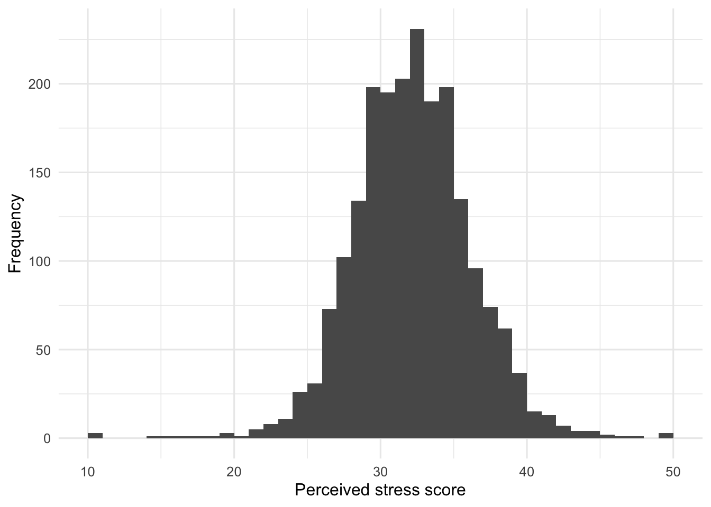
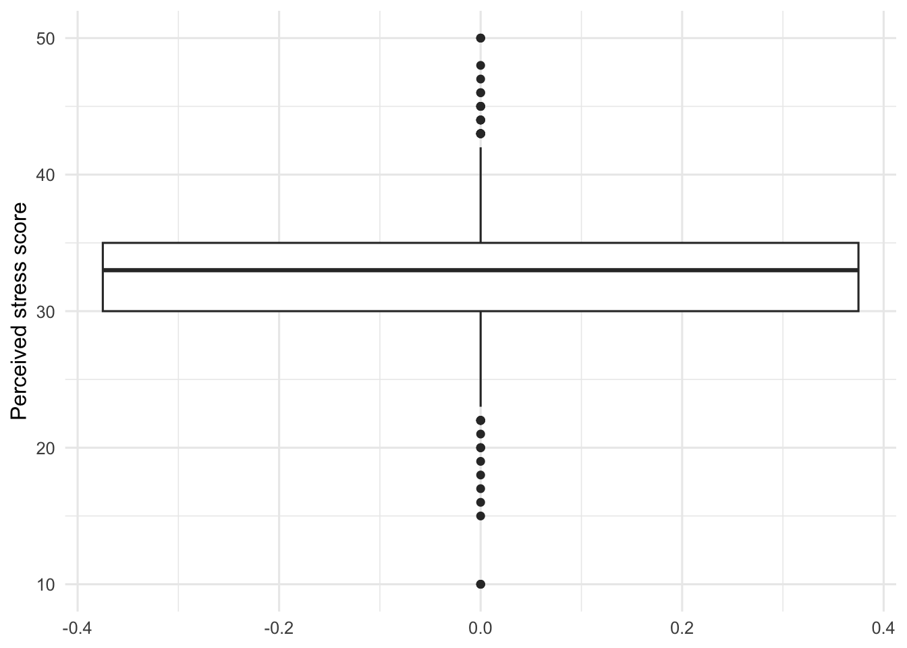
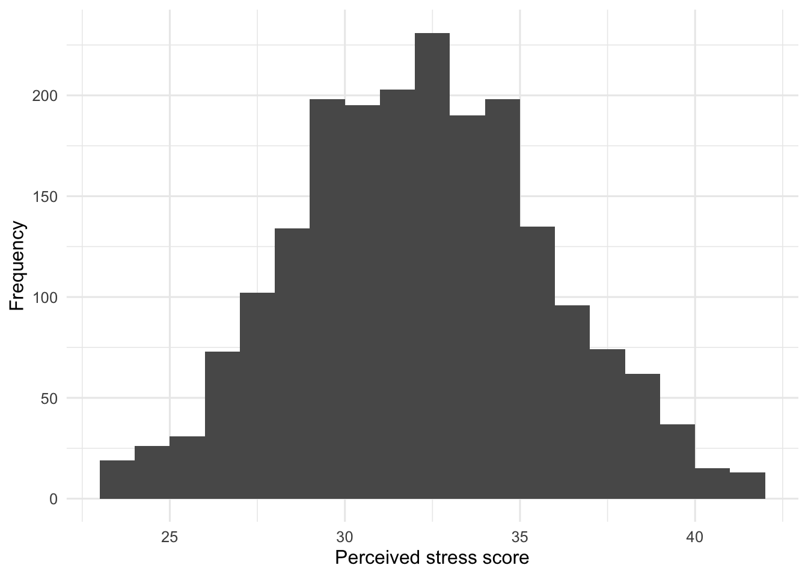
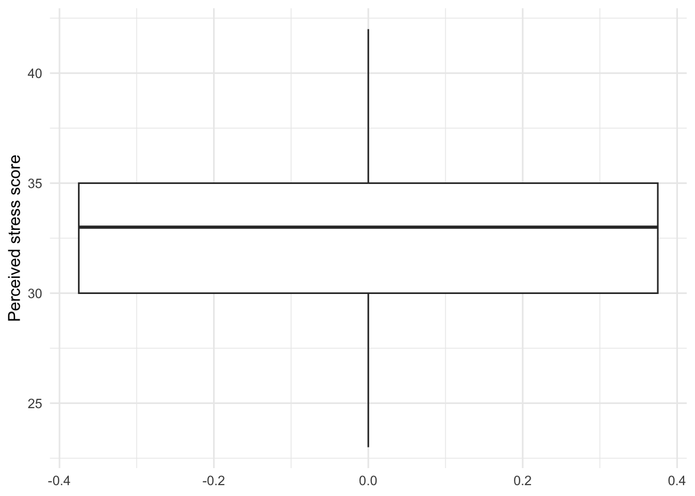
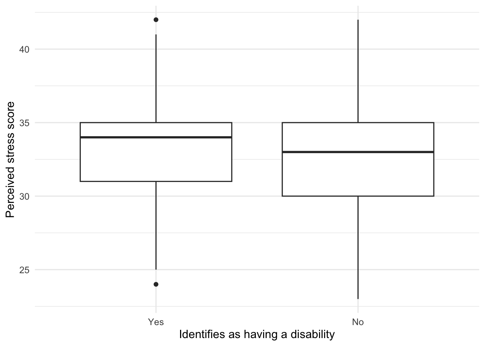
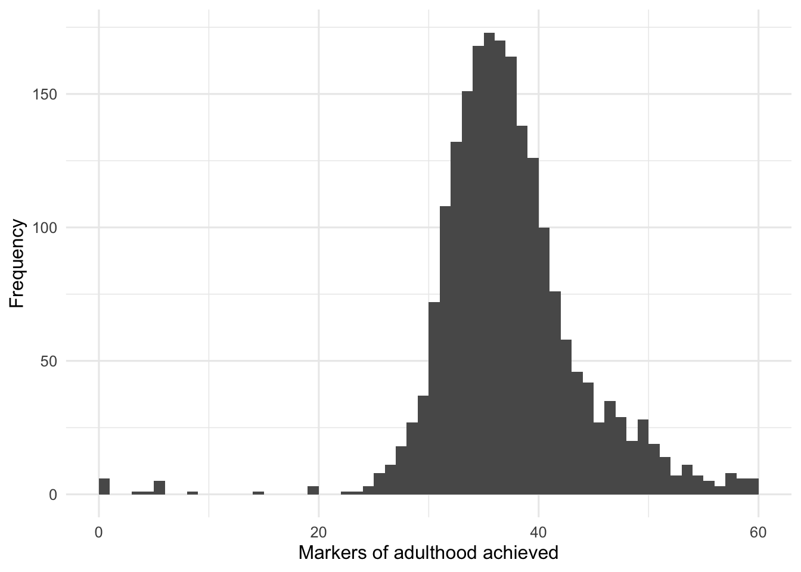
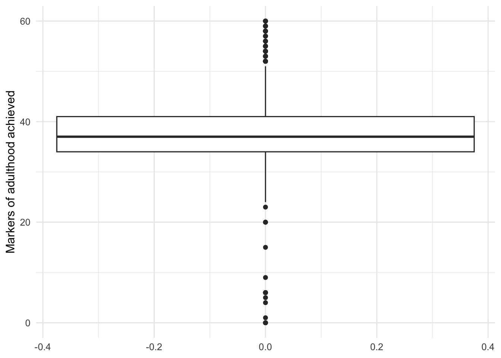
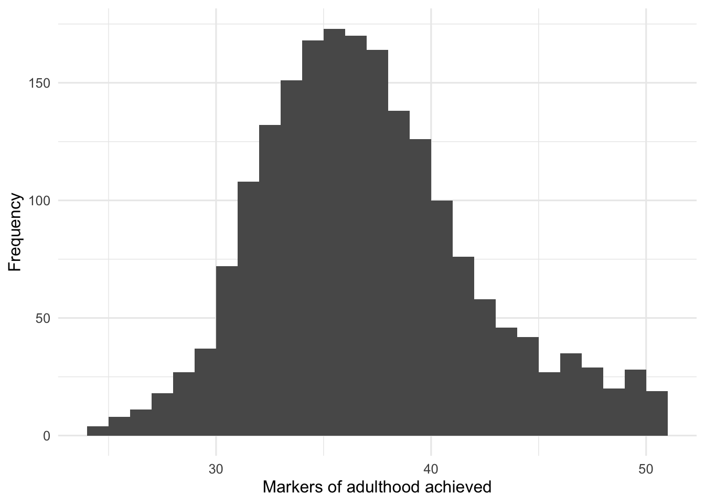
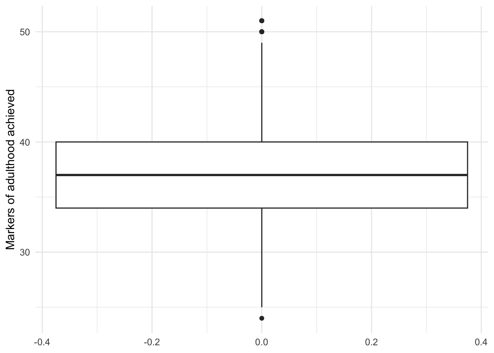
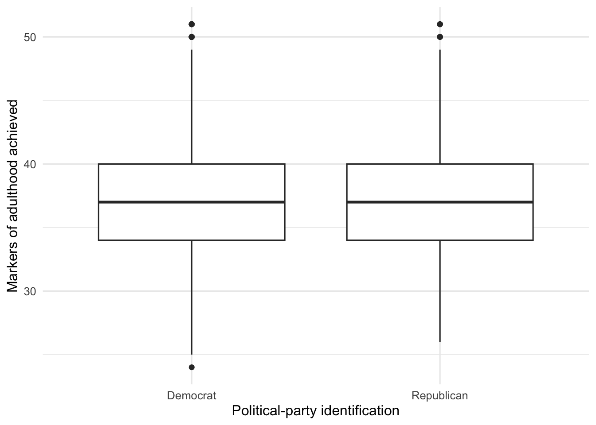

source("scripts/_setup.R")Chapter 5: Other Descriptive Statistics
Z scores, IQR, boxplots, and effect size
Use z scores, IQR, boxplots, and effect size to describe stress and compare groups.
Chapter 5 of Exploring Statistics introduces additional tools for describing distributions. This time, we will look beyond the average: z scores show where individual scores sit, boxplots flag values worth investigating, and effect sizes help us judge whether a group difference is substantial.
Learning Goals
By the end of this chapter, you should be able to:
- calculate and interpret standard deviation, range, quartiles, and IQR;
- create a new variable in a data frame;
- calculate z scores from the z-score formula;
- use z scores and IQR boundaries to identify potential outliers;
- create and interpret boxplots;
- explain why outlier decisions require judgment; and
- compare descriptive statistics across two groups.
Research Questions
- How is perceived stress distributed in emerging adults? Are there any participants in our EAMMi2 data file who are particularly high or low on stress? To what extent is perceived stress distributed differently for people with and without a disability?
- Pick another variable in our data set that you suspect might not be normally distributed. Use the IQR method to identify potential outliers. Filter out the outliers and then write a paragraph summarizing your final descriptive-statistics report. Then, compare two groups on this variable and write another descriptive-statistics report.
Research Question 1 provides a complete worked analysis. Research Question 2 asks you to apply the same process to a variable you select.
Research Question 1: Perceived Stress
Get Ready
Open scripts/05-other-descriptive-statistics.R in the starter project and run one complete expression at a time.
| Variable | What it measures | Role in the analysis |
|---|---|---|
Stress |
Perceived stress over the last month | quantitative outcome |
Disability |
Whether the participant identified as having a disability | categorical grouping variable |
Stress is the sum of 10 questions rated from 1 to 5, so possible scores range from 10 to 50. Give Disability readable labels.
eammi <- eammi |>
mutate(
Disability = factor(
Disability,
levels = c(1, 2),
labels = c("Yes", "No")
)
)Run The Analysis
Describe Stress
stress_summary <- eammi |>
drop_na(Stress) |>
summarise(
N = n(),
Mean = mean(Stress),
Median = median(Stress),
Mode = statistical_mode(Stress),
SD = sd(Stress),
Minimum = min(Stress),
Maximum = max(Stress),
Range = Maximum - Minimum,
Q1 = quantile(Stress, 0.25),
Q3 = quantile(Stress, 0.75),
IQR = IQR(Stress)
)
stress_summary# A tibble: 1 × 11
N Mean Median Mode SD Minimum Maximum Range Q1 Q3 IQR
<int> <dbl> <dbl> <int> <dbl> <dbl> <dbl> <dbl> <dbl> <dbl> <dbl>
1 2071 32.7 33 33 4.05 10 50 40 30 35 5Investigate The Code
Most of this summary repeats the pattern from Chapters 3 and 4. The new lines are:
quantile(Stress, 0.25)for Q1;quantile(Stress, 0.75)for Q3; andIQR(Stress)for the distance between Q1 and Q3.
eammi |>
drop_na(Stress) |>
ggplot(aes(x = Stress)) +
geom_histogram(binwidth = 1, boundary = 0) +
labs(
x = "Perceived stress score",
y = "Frequency"
)
Looking at this output, you might say that this distribution has a slight negative skew. The mean is similar to the median, but the histogram has a tail pointing toward lower scores.
Create Z Scores
The formula for a z score is:
\[ z = \frac{X - M}{SD} \]
In words, subtract the mean from a person’s score and divide by the standard deviation.
Use head() to display the first two observed stress scores.
head(eammi$Stress, n = 2)[1] 33 36Using what you learned in the textbook, calculate the z score for each of these observations by hand. Use the mean and standard deviation for Stress from the summary output above.
If you use the rounded values shown in the output, you should get approximately 0.074 and 0.815. Keep those answers nearby while R creates the new variable.
eammi <- eammi |>
mutate(
Stress_z = (Stress - mean(Stress, na.rm = TRUE)) / sd(Stress, na.rm = TRUE)
)
head(eammi$Stress_z, n = 2)[1] 0.07741713 0.81854603This mutate() step creates Stress_z inside eammi. The formula in the code follows the statistical formula in the same order. R reports approximately 0.077 and 0.819 for the first two observations. These results differ slightly from the hand calculations because R uses the complete, unrounded mean and standard deviation stored in the data.
To check your work creating the z scores, ask R for the mean and standard deviation of the new variable. Before running the code, decide what these numbers should be for a distribution of z scores.
eammi |>
drop_na(Stress_z) |>
summarise(
Mean = mean(Stress_z),
SD = sd(Stress_z),
Minimum = min(Stress_z),
Maximum = max(Stress_z)
)# A tibble: 1 × 4
Mean SD Minimum Maximum
<dbl> <dbl> <dbl> <dbl>
1 3.77e-16 1.000 -5.60 4.28The mean is displayed in scientific notation as a number extremely close to 0, and the standard deviation is 1. This is the expected result for a distribution of z scores.
Next, call back to our discussion in the textbook about how to use z scores to identify outliers in a distribution of scores. Use the general rule that z scores greater than an absolute value of 3 may be outliers. Compare that rule with the descriptive statistics for Stress_z to identify whether we have potential outliers before continuing.
Using this approach, we do have potential outliers: the minimum z score is -5.60 and the maximum is 4.28.
Identify Potential Outliers With IQR
Another way to identify potential outliers relies on the interquartile range. The IQR boundaries are:
\[ \text{Lower outlier boundary} = Q1 - (1.5 \times IQR) \]
\[ \text{Upper outlier boundary} = Q3 + (1.5 \times IQR) \]
stress_iqr <- eammi |>
drop_na(Stress) |>
summarise(
Q1 = quantile(Stress, 0.25),
Q3 = quantile(Stress, 0.75),
IQR = IQR(Stress),
LowerBoundary = Q1 - (1.5 * IQR),
UpperBoundary = Q3 + (1.5 * IQR)
)
stress_iqr# A tibble: 1 × 5
Q1 Q3 IQR LowerBoundary UpperBoundary
<dbl> <dbl> <dbl> <dbl> <dbl>
1 30 35 5 22.5 42.5The lower boundary is 22.5 and the upper boundary is 42.5. Scores below 22.5 or above 42.5 are flagged as potential outliers. With this approach, many more scores will be considered outliers compared with the z-score approach.
eammi |>
drop_na(Stress) |>
ggplot(aes(y = Stress)) +
geom_boxplot() +
labs(
x = NULL,
y = "Perceived stress score"
)
The IQR approach is what R uses to identify potential outliers in boxplots. You can see that the dots beyond the whiskers begin around 22.5 and 42.5, respectively.
Filter The Potential Outliers
The next code creates a new data frame that contains only stress scores between the two IQR boundaries.
stress_filtered <- eammi |>
filter(Stress > 22.5, Stress < 42.5)The new object is named stress_filtered. The original eammi data frame remains unchanged. Keeping the original data untouched makes it possible to check the decision, compare results, or choose a different approach later.
Now repeat the descriptive statistics and graphs with the filtered data.
stress_filtered_summary <- stress_filtered |>
summarise(
N = n(),
Mean = mean(Stress),
Median = median(Stress),
Mode = statistical_mode(Stress),
SD = sd(Stress),
Minimum = min(Stress),
Maximum = max(Stress),
Range = Maximum - Minimum,
Q1 = quantile(Stress, 0.25),
Q3 = quantile(Stress, 0.75),
IQR = IQR(Stress)
)
stress_filtered_summary# A tibble: 1 × 11
N Mean Median Mode SD Minimum Maximum Range Q1 Q3 IQR
<int> <dbl> <dbl> <int> <dbl> <dbl> <dbl> <dbl> <dbl> <dbl> <dbl>
1 2032 32.7 33 33 3.60 23 42 19 30 35 5stress_filtered |>
ggplot(aes(x = Stress)) +
geom_histogram(binwidth = 1, boundary = 0) +
labs(
x = "Perceived stress score",
y = "Frequency"
)
stress_filtered |>
ggplot(aes(y = Stress)) +
geom_boxplot() +
labs(
x = NULL,
y = "Perceived stress score"
)
Because the original version of our Stress variable was not appreciably skewed by the potential outliers we filtered, not much has changed in the descriptive-statistics output. You may notice that the standard deviation has gotten smaller. Think through why this would be. You should also see that the boxplot is no longer flagging any potential outliers.
Before moving on, write a paragraph summarizing the filtered version of the Stress distribution that also tells your audience about our approach to handling potential outliers. You can check your work at the end of this module.
As a reminder, in real research, your decision to keep or set aside potential outliers is a judgment that you need to justify to your audience. In this case, the original variable was very close to a normal distribution, so we suggest erring on the side of inclusion by keeping all of the data. We filtered the potential outliers here for demonstration purposes.
Compare Stress By Disability Status
As a final step, let’s compare how Stress is distributed between individuals who do and do not identify as having a disability.
The next summary reuses group_by() to compare the two groups. Before running it, identify the grouping variable and the quantitative outcome.
stress_disability_summary <- stress_filtered |>
drop_na(Disability) |>
group_by(Disability) |>
summarise(
N = n(),
Mean = mean(Stress),
Median = median(Stress),
Mode = statistical_mode(Stress),
SD = sd(Stress),
Minimum = min(Stress),
Maximum = max(Stress),
Range = Maximum - Minimum,
Q1 = quantile(Stress, 0.25),
Q3 = quantile(Stress, 0.75),
IQR = IQR(Stress)
)
stress_disability_summary# A tibble: 2 × 12
Disability N Mean Median Mode SD Minimum Maximum Range Q1 Q3
<fct> <int> <dbl> <dbl> <int> <dbl> <dbl> <dbl> <dbl> <dbl> <dbl>
1 Yes 171 33.4 34 34 3.23 24 42 18 31 35
2 No 1861 32.6 33 33 3.63 23 42 19 30 35
# ℹ 1 more variable: IQR <dbl>stress_filtered |>
drop_na(Disability) |>
ggplot(aes(x = Disability, y = Stress)) +
geom_boxplot() +
labs(
x = "Identifies as having a disability",
y = "Perceived stress score"
)
Calculate Cohen’s d
Cohen’s d describes the mean difference in standard deviation units:
\[ d = \frac{\text{mean difference}}{\text{standard deviation}} \]
The setup file includes independent_cohens_d(), which gets each group’s sample size, mean, and standard deviation, calculates the pooled standard deviation, and then calculates Cohen’s d.
stress_disability_d <- independent_cohens_d(
stress_filtered,
Stress,
Disability
)
stress_disability_d# A tibble: 1 × 3
MeanDifference PooledSD CohensD
<dbl> <dbl> <dbl>
1 0.739 3.60 0.205The three inputs are the data frame, the quantitative outcome, and the grouping variable. Focus on the result: Cohen’s d expresses the difference between the group means relative to the variability in the scores.
Produce Your Interpretation
Before moving on to Research Question 2, write a summary that compares these two distributions of Stress and tells your audience about our approach to handling potential outliers. You can check your work at the end of this module.
Research Question 2: Produce An Outlier And Group-Comparison Analysis
Pick another variable in our data set that you suspect might not be normally distributed and use the IQR method to identify potential outliers. Filter out the potential outliers and then write a paragraph summarizing your final descriptive-statistics report. Then, compare two groups on this variable and write another descriptive-statistics report. You can check your work by comparing your paragraphs with the sample paragraphs at the end of this module.
MOA_ACH, SocialSupport, and Symptoms are good options. Use Research Question 1 as your model, and create descriptive object names for your own summaries and filtered data.
Check Your Work
Research Question 1
Summary For Perceived Stress
Using the EAMMi2 sample, we examined emerging adults’ ratings of perceived stress over the last month, which had a possible score range of 10 to 50. An initial inspection of the data revealed potential outliers below 22.5 and above 42.5; these values were set aside for this demonstration analysis. Participants’ ratings of perceived stress were normally distributed, with a mean of 32.70 and a median and mode of 33. The standard deviation was 3.60, with a range of 19 and an IQR of 5. The graph presents a boxplot of these data.
Summary For Perceived Stress Of Individuals With And Without A Disability
Using the EAMMi2 sample, we compared ratings of perceived stress over the last month for emerging adults with and without a disability. This scale had a possible score range of 10 to 50. An initial inspection of the data revealed potential outliers below 22.5 and above 42.5; these values were set aside for this demonstration analysis. The graph shows boxplots of perceived stress ratings for each group. The difference in means produced an effect size of d = 0.21.
The mean perceived stress rating for emerging adults with a disability was 33.35, and the median was 34. The mean for emerging adults without a disability was 32.61, and the median was 33. Thus, emerging adults with a disability reported slightly higher stress than emerging adults without a disability, although the mean difference of 0.74 points was small. Perceived stress ratings for those without a disability were slightly more variable (SD = 3.63, range = 19, IQR = 5) than ratings for those with a disability (SD = 3.23, range = 18, IQR = 4). Both distributions closely approximated a normal distribution.
Research Question 2 Sample
The following example uses MOA_ACH and compares participants who identified as Democrats or Republicans using PartyDichotomous.
Inspect The Original Variable
moa_original_summary <- eammi |>
drop_na(MOA_ACH) |>
summarise(
N = n(),
Mean = mean(MOA_ACH),
Median = median(MOA_ACH),
Mode = statistical_mode(MOA_ACH),
SD = sd(MOA_ACH),
Minimum = min(MOA_ACH),
Maximum = max(MOA_ACH),
Range = Maximum - Minimum,
Q1 = quantile(MOA_ACH, 0.25),
Q3 = quantile(MOA_ACH, 0.75),
IQR = IQR(MOA_ACH)
)
moa_original_summary# A tibble: 1 × 11
N Mean Median Mode SD Minimum Maximum Range Q1 Q3 IQR
<int> <dbl> <dbl> <int> <dbl> <dbl> <dbl> <dbl> <dbl> <dbl> <dbl>
1 2073 37.8 37 36 6.56 0 60 60 34 41 7eammi |>
drop_na(MOA_ACH) |>
ggplot(aes(x = MOA_ACH)) +
geom_histogram(binwidth = 1, boundary = 20) +
labs(
x = "Markers of adulthood achieved",
y = "Frequency"
)
eammi |>
drop_na(MOA_ACH) |>
ggplot(aes(y = MOA_ACH)) +
geom_boxplot() +
labs(
x = NULL,
y = "Markers of adulthood achieved"
)
The original distribution has a slight negative skew. Calculate the IQR boundaries.
moa_iqr <- eammi |>
drop_na(MOA_ACH) |>
summarise(
Q1 = quantile(MOA_ACH, 0.25),
Q3 = quantile(MOA_ACH, 0.75),
IQR = IQR(MOA_ACH),
LowerBoundary = Q1 - (1.5 * IQR),
UpperBoundary = Q3 + (1.5 * IQR)
)
moa_iqr# A tibble: 1 × 5
Q1 Q3 IQR LowerBoundary UpperBoundary
<dbl> <dbl> <dbl> <dbl> <dbl>
1 34 41 7 23.5 51.5The lower boundary is 23.5, and the upper boundary is 51.5.
Filter And Describe The Variable
moa_filtered <- eammi |>
filter(MOA_ACH > 23.5, MOA_ACH < 51.5)moa_filtered_summary <- moa_filtered |>
summarise(
N = n(),
Mean = mean(MOA_ACH),
Median = median(MOA_ACH),
Mode = statistical_mode(MOA_ACH),
SD = sd(MOA_ACH),
Minimum = min(MOA_ACH),
Maximum = max(MOA_ACH),
Range = Maximum - Minimum,
Q1 = quantile(MOA_ACH, 0.25),
Q3 = quantile(MOA_ACH, 0.75),
IQR = IQR(MOA_ACH)
)
moa_filtered_summary# A tibble: 1 × 11
N Mean Median Mode SD Minimum Maximum Range Q1 Q3 IQR
<int> <dbl> <dbl> <int> <dbl> <dbl> <dbl> <dbl> <dbl> <dbl> <dbl>
1 1987 37.5 37 36 5.00 24 51 27 34 40 6moa_filtered |>
ggplot(aes(x = MOA_ACH)) +
geom_histogram(binwidth = 1, boundary = 20) +
labs(
x = "Markers of adulthood achieved",
y = "Frequency"
)
moa_filtered |>
ggplot(aes(y = MOA_ACH)) +
geom_boxplot() +
labs(
x = NULL,
y = "Markers of adulthood achieved"
)
Using the EAMMi2 sample, we examined the number of markers of adulthood achieved by emerging adults, which had a possible score range of 20, or none achieved, to 60, or all achieved. An initial inspection revealed potential outliers below 23.5 and above 51.5; these values were set aside for the analysis. Participants’ achievement of markers of adulthood was close to normally distributed, with a mean of 37.50, a median of 37, and a mode of 36. The standard deviation was 5.00, with a range of 27 and an IQR of 6. The graph presents a boxplot of these data.
Compare Political-Party Groups
moa_filtered <- moa_filtered |>
mutate(
PartyDichotomous = factor(
PartyDichotomous,
levels = c(1, 2),
labels = c("Democrat", "Republican")
)
)moa_party_summary <- moa_filtered |>
drop_na(PartyDichotomous) |>
group_by(PartyDichotomous) |>
summarise(
N = n(),
Mean = mean(MOA_ACH),
Median = median(MOA_ACH),
Mode = statistical_mode(MOA_ACH),
SD = sd(MOA_ACH),
Minimum = min(MOA_ACH),
Maximum = max(MOA_ACH),
Range = Maximum - Minimum,
Q1 = quantile(MOA_ACH, 0.25),
Q3 = quantile(MOA_ACH, 0.75),
IQR = IQR(MOA_ACH)
)
moa_party_summary# A tibble: 2 × 12
PartyDichotomous N Mean Median Mode SD Minimum Maximum Range Q1
<fct> <int> <dbl> <dbl> <int> <dbl> <dbl> <dbl> <dbl> <dbl>
1 Democrat 1007 37.4 37 35 5.00 24 51 27 34
2 Republican 458 37.6 37 38 4.80 26 51 25 34
# ℹ 2 more variables: Q3 <dbl>, IQR <dbl>moa_filtered |>
drop_na(PartyDichotomous) |>
ggplot(aes(x = PartyDichotomous, y = MOA_ACH)) +
geom_boxplot() +
labs(
x = "Political-party identification",
y = "Markers of adulthood achieved"
)
moa_party_d <- independent_cohens_d(
moa_filtered,
MOA_ACH,
PartyDichotomous
)
moa_party_d# A tibble: 1 × 3
MeanDifference PooledSD CohensD
<dbl> <dbl> <dbl>
1 -0.230 4.94 -0.0466Using the EAMMi2 sample, we compared achievement of markers of adulthood between participants who identified as Democrats and participants who identified as Republicans. This scale had a possible score range of 20, or none achieved, to 60, or all achieved. An initial inspection revealed potential outliers below 23.5 and above 51.5; these values were set aside for the analysis. The graph shows boxplots of achievement of markers of adulthood for each group. The difference in means produced an effect size of d = -0.05.
The mean achievement of markers of adulthood for emerging adults who identified as Democrats was 37.43, and the median was 37. The mean for participants who identified as Republicans was 37.66, and the median was 37. The difference between these means was close to zero. Variability for Democrats (SD = 5.00, range = 27, IQR = 6) was very similar to variability for Republicans (SD = 4.80, range = 25, IQR = 6). Both distributions closely approximated a normal distribution and were very similar to one another.
Chapter Takeaway
Z scores describe how far a score is from the mean in standard deviation units. IQR boundaries and boxplots help identify potential outliers. When values are unusual but still possible, deciding whether to keep or set them aside is a research judgment that should be explained clearly.
In this chapter, we focused on these new R commands:
head()displays the first observations or values in an object.quantile()calculates quartiles and other percentiles.IQR()calculates the interquartile range.geom_boxplot()creates a boxplot.independent_cohens_d()calculates Cohen’s d for two independent groups.